Välkommen till
HBL 365-appen!
Du loggar in med samma uppgifter som du använder på webbsidorna eller i nyhetsapparna.
I HBL 365-appen hittar du:
- Alla KSF Medias tidningar: HBL, Östnyland, Västra Nyland och HBL Junior.
- Du kan läsa artiklar i e-tidningen också i en särskild artikelvy.
- I artikelvyn kan du lyssna på artikeln.
- Sökfunktionen hjälper dig hitta de nyheter du söker.
Trevliga lässtunder med den HBL 365-appen!